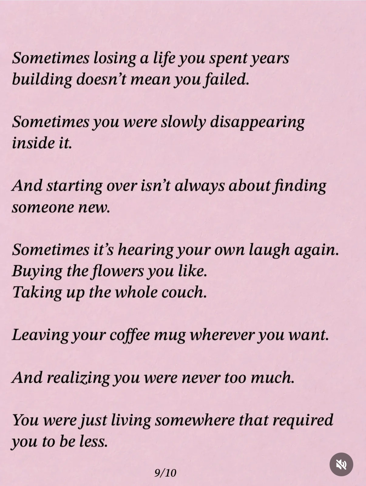
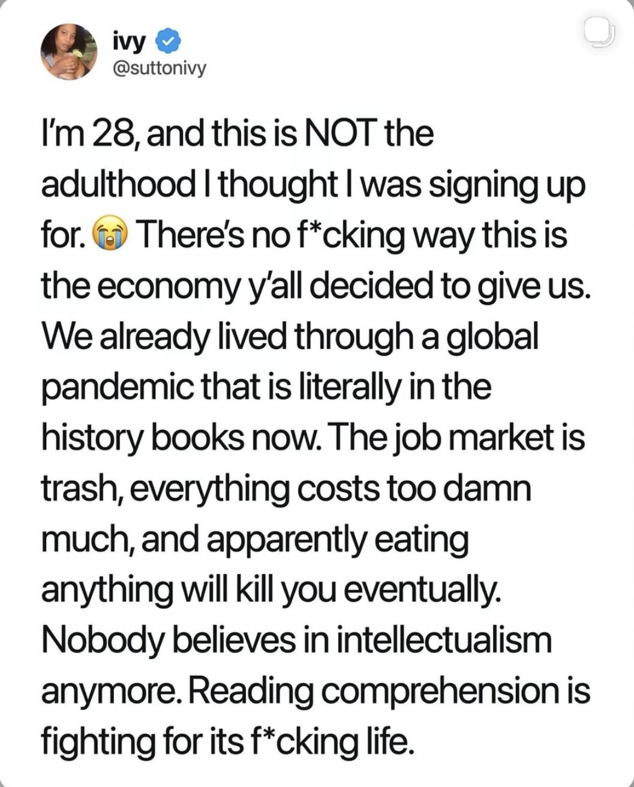
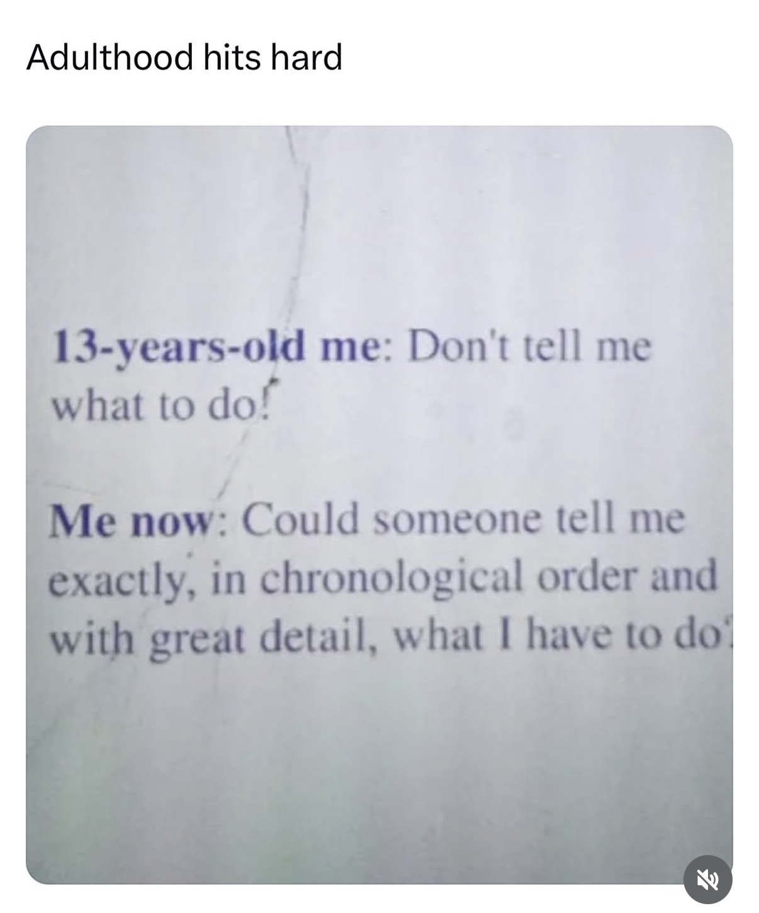
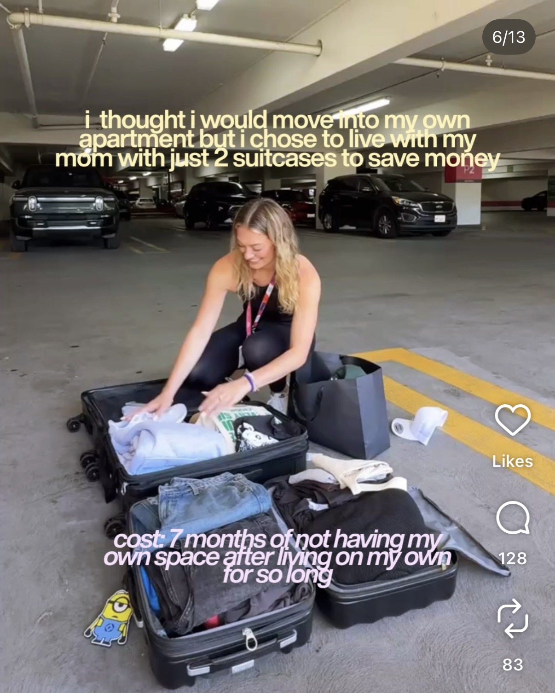
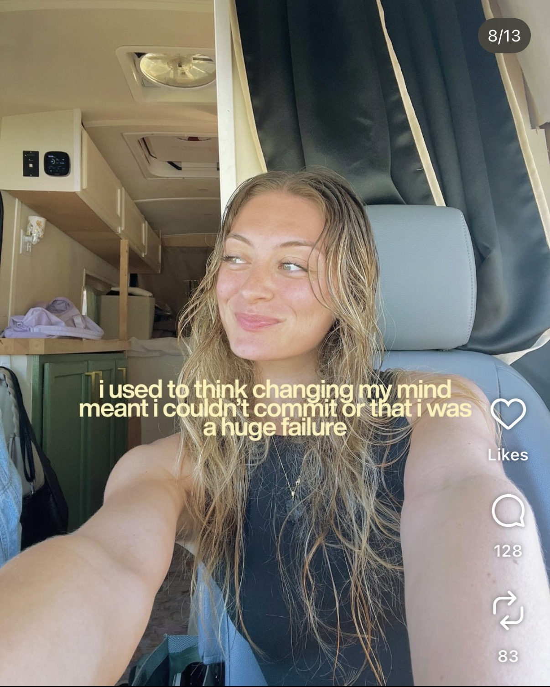
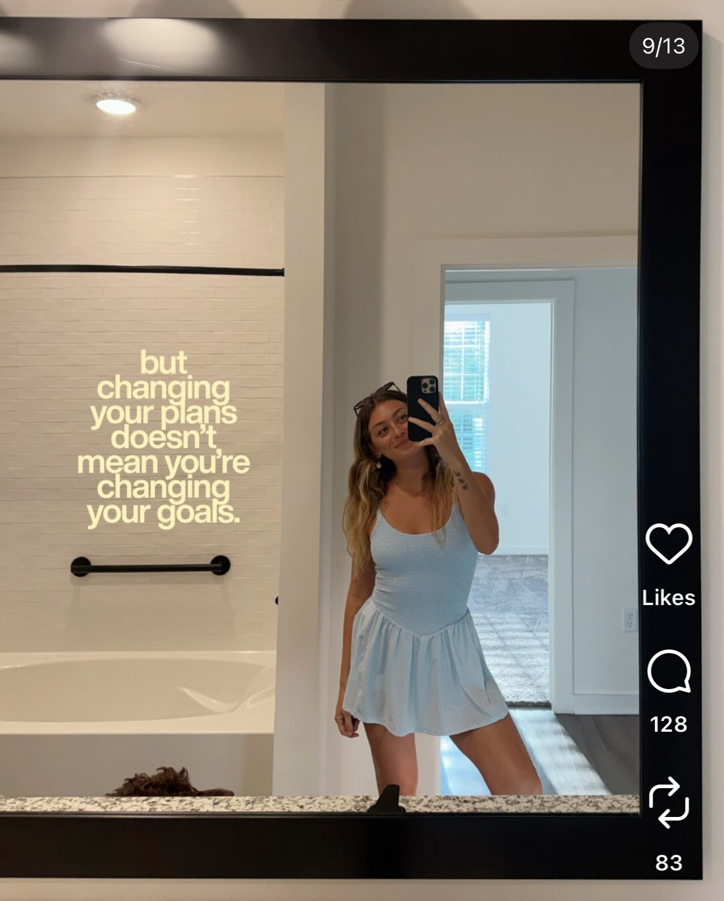
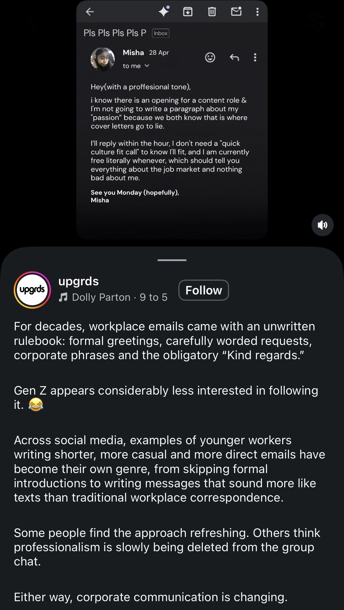
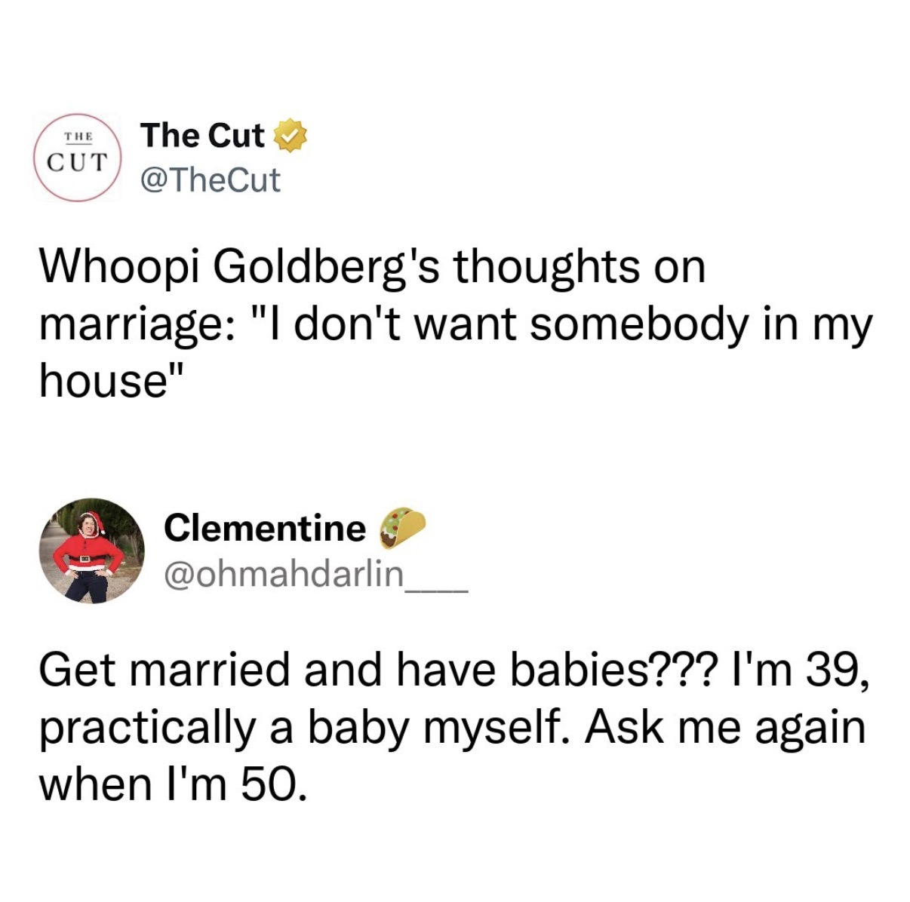
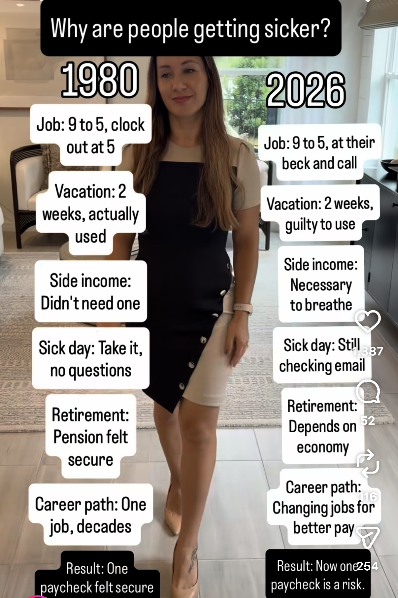

This screenshot speaks to an outcome that could happen when a traditional milestone that says we have reached adulthood falls through.

Posts that compare the adulthood we imagined growing up with the realities, changing plans, and unexpected experiences of actually living through our twenties.

This screenshot speaks to an outcome that could happen when a traditional milestone that says we have reached adulthood falls through.

Adulting seems to be an illusion. The world our parents told us we were going to get is not the world that got handed to us. Things fall apart. Adulting does too, apparently.

As kids, we have it all figured out, but this screenshot suggests that young adulthood is not that way at all.

I feel like this disrupts the notion I had growing up that adulting meant moving out. But I also think this points to the economy we are all experiencing, which is not allowing some of us to move out as quickly as we might have expected. I thought I would move out right after graduating from undergrad, but I didn't. This screenshot shows me that it is not just me!

This screenshot establishes the belief some of us had growing up about young adulthood.

But this one starts to confront the actual reality of changing plans as a young adult: possible growth.

I always thought young adulthood meant society telling me how it is. How we fit into society's rules and expectations for that. But maybe this screenshot is proof that in young adulthood, sometimes we make the rules. Not necessarily JUST follow them.

I used to think 39 was an adult. At 39, I thought I would be a "full grown adult" who had a stable career, got married, had fur babies and little kids running around, and had money to support my family. Now I am in my early twenties and I still feel like a child and a lot of that still seems distant. But now that I am here, I understand that maybe I too will never outgrow that feeling. I am a high school teacher and some days I still have to remember that I am the "adult in the room." Maybe that is the reality, maybe you never "feel like an adult."

I fear this is another screenshot that emphasizes the version of young adulthood that our parents thought they were handing down to us versus the actual reality of being a young adult just trying to make it in this world.